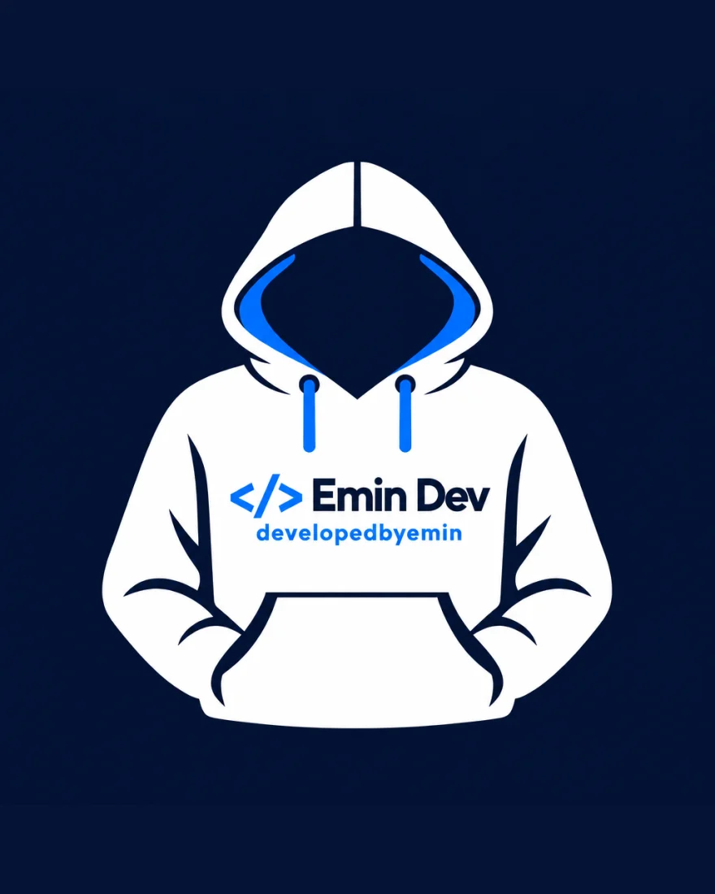

Websites
Business sites, portfolios and landing pages that present what you do and turn visitors into enquiries.
About Emin Dev
Emin Dev designs and builds custom websites, online stores and animated web experiences for businesses of every kind. Each project is designed around the brand, built for desktop and mobile, and agreed in writing before work begins.
What we do
Business sites, portfolios and landing pages that present what you do and turn visitors into enquiries.
Product pages, collections, cart and checkout, set up with the payment provider that works in your country.
Scroll animations and product reveals, built into a new site or added to the one you already have.
New products, prices, photos and news added after launch, quoted separately from technical maintenance.
How we work
The founder leads every project personally. You speak with the person responsible for your website, not an account manager.
Before payment you receive the scope, the total price, the timeline and any ongoing costs. Once accepted, the price doesn't change for the agreed work.
You review the website, request the agreed changes and approve it before it goes live.
Once the project fee is paid, the design and the code belong to you. You can take your site with you at any time.
You get the exact price in writing before you pay.

The founder
Osman Emin leads every Emin Dev project from the first conversation to launch day and works remotely with businesses in any country. Working with one developer means direct answers, quick decisions and one person accountable for the result.
oeminsisman@gmail.comWorking details
Describe your business and what the website should do. We'll reply by email with the next step.
Request a quote